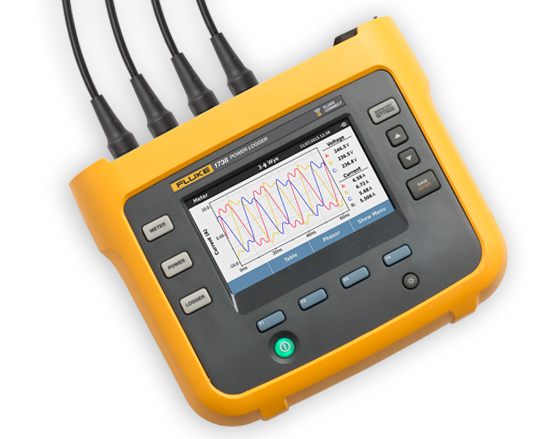

Fluke 1736 および 1738 三相電力ロガー
総合的な電力品質とエネルギー調査
新しい Fluke 1736 および 1738 三相電力ロガーは、Fluke Connect® モバイル・アプリおよびデスクトップ・ソフトウェアに対応しているため、電力品質やエネルギーに関する重要な意思決定をリアルタイムで行うのに必要なデータをすばやく用意できます。
デモの依頼 製品仕様をダウンロード ビデオを見る
システムの信頼性の最適化とコスト削減
可視化の向上
500 を超える電力品質パラメーターを自動的にキャプチャし、記録します。
不確実性の低減
インテリジェントな接続確認機能により、設定操作を簡素化して誤差を低減できます。
判断の改善
Fluke Connect® アプリを経由してリモートでデータにアクセスし、共有するので、より安全なワーキング・ディスタンスを確保でき、重要な意思決定をリアルタイムで行えます。これによって、保護用具、現場訪問、チェックインの必要性を削減できます。
お見積のご依頼
| 機能 | 1736 | 1738 |
| 負荷の調査 | • | • |
| エネルギー評価 | • | • |
| 高調波測定 | • | • |
| 電圧イベント捕捉 | • | • |
| 高度な分析:
波形およびインラッシュ・イベント捕捉 PQ ヘルス (EN51060) |
アップグレード・パッケージ** | • |
| IEEE519 全高調波歪み測定 | オプション (別売品) | オプション (別売品) |
| Fluke Connect® と完全に統合されたログ機能 | アップグレード・パッケージ* | • |
| Wi-Fi/Bluetooth | • | • |
| 磁気プローブ・セット | オプション (別売品) | • |
| 磁石式ハンガー | オプション (別売品) | • |
| WiFi ルーター経由の接続 | 製品登録時に利用可能な無料のソフトウェア・ライセンスが必要です。 | |
| *現在アップグレード・パッケージは、1738 Advanced Power Logger と同等の機能と性能を持つ既存の 1736 Power Logger のアップグレードに利用できます。アップグレード・パッケージの詳細については、販売代理店までお問い合わせください。 | ||
Fluke 1736 および 1738 の概要
この製品ツアーでは、Fluke 1736 および 1738 の設計とレイアウトによって、従来よりも簡単になった電力品質やエネルギー調査の設定とロギングについてご紹介します。
ビデオを見る
フルーク電力ロガー/エネルギー・ロガーを使用した 30 日間の負荷調査
既存の電気設備や各種の給電器に新たな負荷を追加する際に最初に行わなければならないことは、新しい負荷をサポートする能力が既存のシステムにあるかどうかを判断することです。
アプリケーション・ノートをダウンロード
